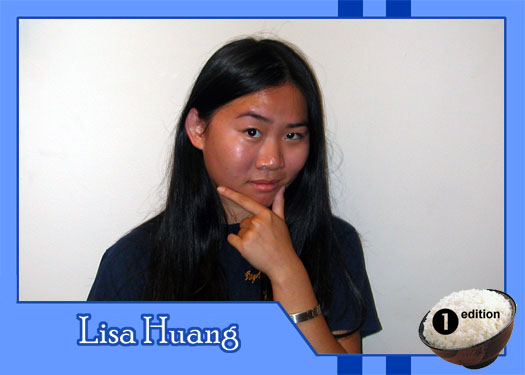

|
Why did you get involved with Theatre Rice? They seemed crazy and fun. Also, acting is cool because you can be all these people that society would generally prohibit you from being. What do you hope to gain from TR? A better understanding of Asian American issues and of myself. What do you like to do in your spare time? Write. Or look at things and try to see the absolutely bizarre in every setting and situation. What are your favorite films or t.v. shows? I like a lot of foreign films because they're generally simpler and more wholesome than American films. Also, you get a sense of this completely different life out there, a different "reality". If you had a quote that defines how you live life, what would it be? I have no idea. |